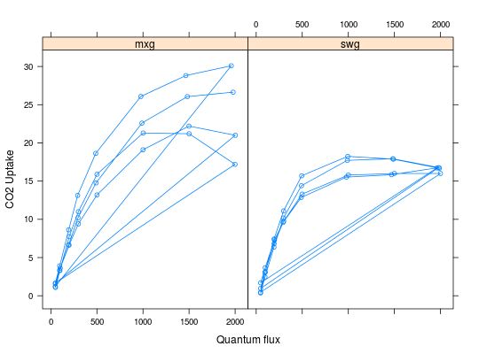

A data frame with 64 observations on the following 6 variables.
mxg swgExample of A/Q curves which serves as a template for using
the Opc4photo and mOpc4photo
functions.
swg stand for switchgrass (Panicum virgatum)
mxg stands for miscanthus (Miscanthus x gignateus)
above ~~
Dandan Wang
data(aq) plotAQ(aq)